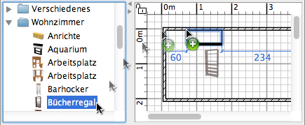

| Hinzufügen von Türen, Fenstern und Mobiliarn | |||
Um ihrem Haus Mobiliar hinzuzufügen, ziehen Sie per Drag&Drop Mobiliar vom Mobiliarkatalog auf Ihren Wohnungsplan oder in Ihre Mobiliarliste.  Sie können auch einige Mobiliar im Katalog auswählen und dann auf Mobiliar > Zum Haus hinzufügen klicken, oder ebenso auf das Hinzufügen-Werkzeug klicken.
Wenn Sie Mobiliarstücke auf die Mobiliarliste ziehen oder sie mit dem Menüeintrag
Mobiliar > Zur Wohnung hinzufügen einfügen, ist die linke obere Ecke am Koordinatenpunkt
(0, 0). Die Mobiliarstücke, die Sie gerade hinzugefügt haben, sind markiert und werden gleichzeitig in die Mobiliarliste, den Wohnungsplan und die 3D-Ansicht eingetragen. Während der Ladezeit der 3D-Modelle werden an ihrer Stelle weiße Platzhalter dargestellt. Um das Hinzufügen von Mobiliar zu beenden, wählen Sie Plan > Auswählen oder wählen das Auswählen-Werkzeug (oder ein beliebiges anderes Werkzeug).
|
|